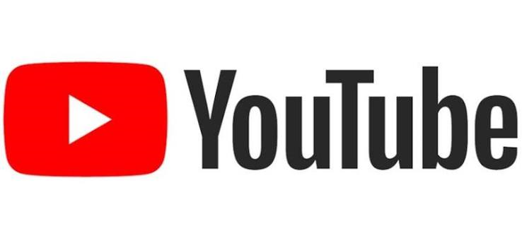
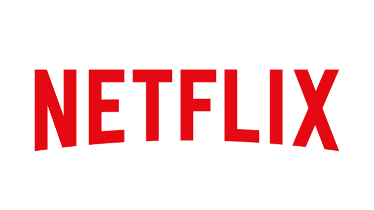

Na Sociedade da Informação e da Comunicação, cada vez mais conectada à internet pelos
celulares, computadores e diversos outros dispositivos, é essencial que as empresas divulguem
seus produtos e serviços por meio de sistemas integrados à web por permitir maior mobilidade,
interação com mídias sociais e uma grande gama de recursos disponíveis. Por essas e
outras razões, estou colocando em prática os conhecimentos adquiridos nessa unidade.
Provavelmente você deva ter os seus sites favoritos para se divertir quando precisa de um
passatempo ou mesmo para não perder de vista aqueles sites que o ajudam muito nos estudos ou
no trabalho, não é mesmo? Por isso nesta atividade fui convidado a desenvolver uma página web
para guardar também os seus sites favoritos. Vamos lá!
Meus sites favoritos: MARCELO FÉLIX DOS SANTOS
Site 01 - Amazon
link para o EBOOK
Site 02 - EADTEC
link para a ETEC
Site 03 - MEU GITHUB
link para meu GitHub
Site 04 - Youtube

link para o Youtube
Site 05 - Netflix

link para a NETFLIX